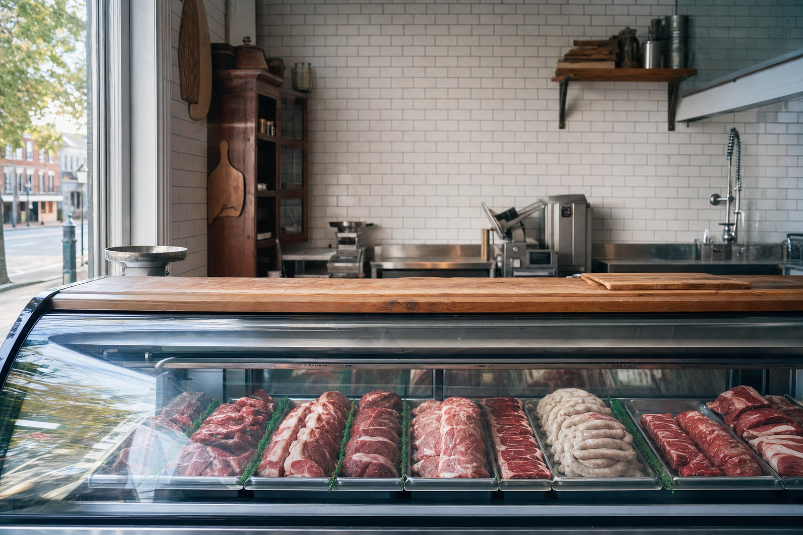
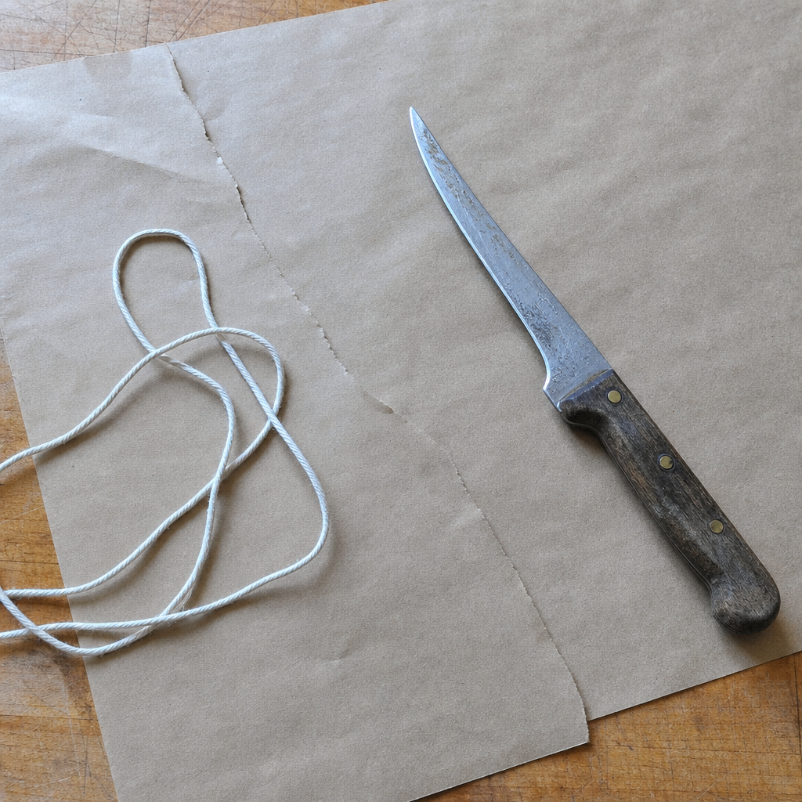
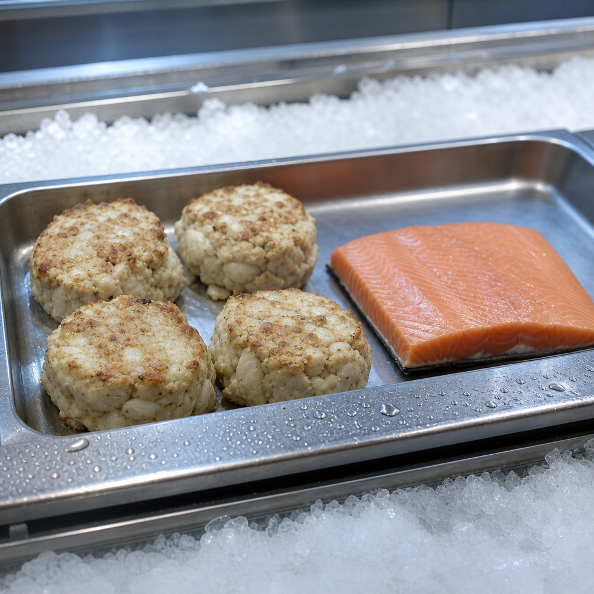
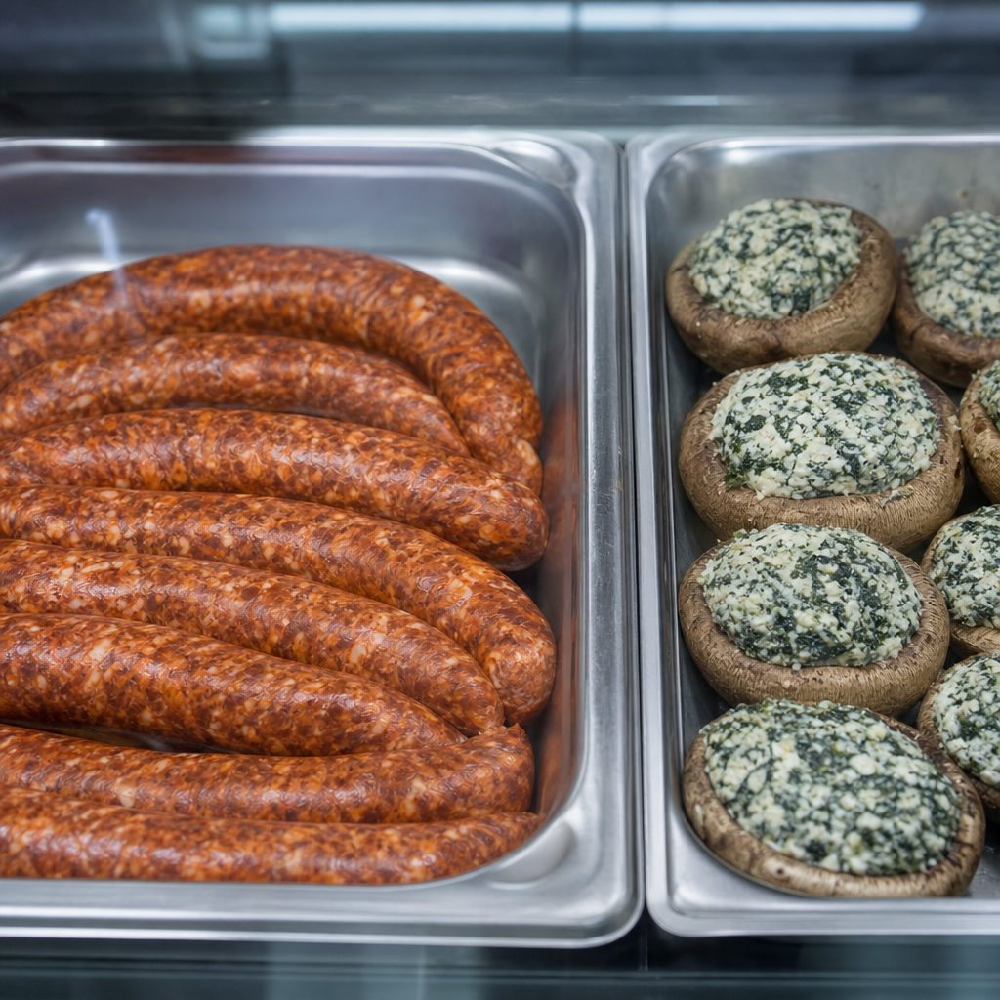

Cut to order by one butcher who has done it for nineteen years.
A working counter on Commerce Street in historic Occoquan. Beef, poultry and seafood cut the way you ask, and a prepared case that is never the same twice.
- Open Tuesday to Saturday, 11am to 7pm
- Closed Mondays
- Walk in or call ahead for a special cut

In the case this week
Updated Tuesday morning
Sample listing, shown for this concept. On the finished page this is the one block that changes, and it is the reason to come back to the site.
-
Ribeye and strip
Cut to the thickness you ask for, not to a shrink wrap tray.
-
Ground sirloin
Ground through the day rather than the week.
-
Half smokes and chorizo
Coarse, hot, and closer to Washington than to a supermarket link.
-
Crab cakes
Lump crab, rolled in the shop. Broil them, do not pan them flat.
-
Stuffed mushrooms
Ten minutes under a hot broiler and they are dinner.
-
Pot pies
Take one home for the freezer. It is the Thursday you have not planned yet.

Ask before you buy.
Nineteen years behind a counter is nineteen years of answering one question: what should I cook this week. Tell Kane who is eating and how much time you have, and he cuts to it.
That conversation is the reason people drive past two supermarkets to get here, and it is the one thing a refrigerated shelf cannot do. A special cut, a roast for eight, a whole tenderloin for a holiday: call ahead and it will be ready.
Not only beef.
Seafood sits in the same case as the steaks, and the prepared side moves with whatever came in that week. Seasonal produce from local farms fills the gap.


The counter
202 Commerce StreetOccoquan, Virginia 22125
Call the shop
703-857-2207Hours
- Tue to Fri11am to 7pm
- Saturday11am to 7pm
- SundayCall to check
- MondayClosed
Photography shown is illustrative art direction. The finished site would use photography of The Artisan Butcher of Occoquan. The case listing above is sample content for this concept, not a record of a particular week.